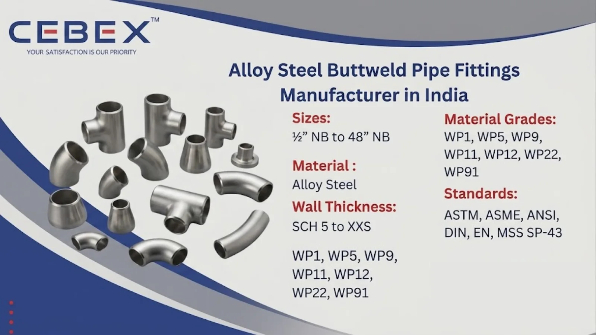

Leading Manufacturer & Exporter of Alloy Steel Buttweld Pipe Fittings
In the demanding world of industrial piping systems, the strength, pressure resistance, and long-term durability of every piping component are critical to operational safety and performance. As a leading Alloy Steel Buttweld Pipe Fittings Manufacturer in India, CEBEX STEEL INDIA has established a strong reputation among EPC contractors, procurement companies, refineries, power plants, and industrial buyers across India, Africa, the Middle East, and international markets. We specialize in manufacturing and exporting high-performance Alloy Steel Buttweld Pipe Fittings engineered for high-temperature, high-pressure, and corrosive industrial applications.
Our advanced manufacturing facility is equipped with modern forming, machining, heat treatment, and testing infrastructure that enables us to produce alloy steel fittings with exceptional dimensional accuracy, metallurgical integrity, and superior surface finish. Whether you are executing a refinery expansion project, thermal power installation, petrochemical plant, or offshore piping system, our alloy steel fittings deliver reliable performance under the most demanding operating conditions.

Selecting the right Alloy Steel Buttweld Pipe Fittings supplier directly impacts the safety, productivity, and lifecycle cost of your piping system. CEBEX STEEL INDIA is recognized as a trusted manufacturing partner because of our commitment to engineering excellence, strict quality control, and customer-focused service. We are an ISO 9001:2015 certified company supplying high-quality alloy steel fittings to domestic and export projects with complete traceability and documentation.
Our in-house quality laboratory performs comprehensive mechanical testing, chemical analysis, dimensional verification, and non-destructive examinations to ensure every fitting conforms to ASTM, ASME, ANSI, DIN, EN, and MSS standards. Every shipment is accompanied by EN 10204 3.1/3.2 mill test certificates, PMI reports, hydro test reports, and inspection documents as per client requirements.
Our export logistics team manages international packing, documentation, and timely delivery for customers across Africa, Southeast Asia, Europe, and the Gulf region.
Our Alloy Steel Buttweld Pipe Fittings are manufactured using premium quality chrome moly alloy steel raw materials sourced from approved mills. Every stage of production is closely monitored to maintain dimensional consistency, mechanical strength, and corrosion resistance. We manufacture a comprehensive range of alloy steel fittings suitable for high-pressure steam pipelines, petrochemical plants, boilers, heat exchangers, and power generation systems.
| Feature | Specification / Detail |
|---|---|
| Standards | ASTM, ASME, ANSI, DIN, EN, MSS SP-43 |
| Material Grades | WP1, WP5, WP9, WP11, WP12, WP22, WP91 |
| Size Range | ½" NB to 48" NB |
| Wall Thickness | SCH 5 to XXS |
| Types | Seamless, Welded, Fabricated |
| Manufacturing Method | Hot Formed, Cold Formed, Forged, Machined |
| Surface Finish | Pickled, Shot Blasted, Sand Blasted, Machined |
| Documentation | MTC EN 10204 3.1/3.2, PMI, NDT, Hydro Test |
Our product portfolio includes a complete range of Alloy Steel Buttweld Pipe Fittings manufactured according to ASME B16.9 and related international standards. We produce long radius elbows, short radius elbows, equal tees, reducing tees, concentric reducers, eccentric reducers, stub ends, pipe bends, end caps, crosses, and custom fabricated fittings. These fittings are available in seamless and welded construction depending on project specifications and operating requirements.
Our engineering team works closely with clients to develop custom fittings based on drawings, special dimensions, wall thicknesses, and project-specific alloy requirements. Every fitting is precision manufactured to ensure proper alignment, weldability, and structural performance in critical industrial piping systems.
Material selection plays a critical role in the performance of alloy steel pipe fittings used in elevated temperature and high-pressure applications. We supply Alloy Steel Buttweld Pipe Fittings in multiple chromium-molybdenum grades designed for thermal stability, oxidation resistance, creep strength, and pressure retention. All raw materials are fully traceable and sourced from reputed approved mills with complete heat number traceability and batch records maintained throughout production.
| Alloy Steel Grade | Typical Applications | Standards |
|---|---|---|
| WP1 | Boilers, pressure piping | ASTM A234 |
| WP5 | Refineries, petrochemical | ASTM A234 |
| WP9 | Heat exchangers, power plants | ASTM A234 |
| WP11 | High-temperature steam systems | ASTM A234 |
| WP22 | Thermal power plants | ASTM A234 |
| WP91 | Supercritical boiler systems | ASTM A234 |
Every Alloy Steel Buttweld Pipe Fitting is supplied with complete chemical composition and mechanical property reports to ensure compliance with international standards and project requirements. Our in-house laboratory performs spectrographic analysis, tensile testing, hardness testing, flattening tests, ultrasonic testing, and radiographic examinations for quality assurance.
| Property | Typical Values |
|---|---|
| Tensile Strength | 415–760 MPa |
| Yield Strength | 205–585 MPa |
| Elongation | 20–30% |
| Hardness | 120–240 HB |
| Main Elements | Cr, Mo, Mn, Si, C, Fe |
All inspection and testing reports are documented and supplied with each order to ensure transparency, traceability, and compliance.
We manufacture Alloy Steel Buttweld Pipe Fittings in sizes ranging from ½" NB to 48" NB with wall thicknesses from SCH 5 to XXS and custom schedules. Our fittings comply with ASME B16.9, ASME B16.28, MSS SP-43, EN 10253, DIN, and international dimensional standards. The following table illustrates typical dimensions for alloy steel elbows as per ASME B16.9.
| Size (NB) | Center to End (mm) | Outside Diameter (mm) | Wall Thickness (mm) |
|---|---|---|---|
| ½" | 38 | 21.3 | 2.77 |
| 1" | 51 | 33.4 | 3.38 |
| 2" | 76 | 60.3 | 3.91 |
| 4" | 152 | 114.3 | 6.02 |
| 8" | 305 | 219.1 | 8.18 |
Custom dimensions, fabricated fittings, and project-specific machining are available upon request.
Our Alloy Steel Buttweld Pipe Fittings are widely used in industries operating under high pressure and elevated temperature conditions. Thermal power plants rely on chrome moly fittings for superheated steam lines and boiler systems, while petrochemical and refinery projects utilize alloy steel fittings for process piping exposed to high heat and corrosive media.
We also serve oil & gas, offshore platforms, fertilizer plants, chemical processing industries, desalination plants, heat exchanger manufacturing, and heavy engineering sectors. The excellent mechanical strength, creep resistance, and thermal stability of alloy steel fittings make them ideal for critical piping systems requiring long operational life and reliable performance.
Quality assurance is a fundamental part of our manufacturing process. Every Alloy Steel Buttweld Pipe Fitting undergoes stringent dimensional inspection, visual examination, and non-destructive testing procedures before dispatch. Our facility is equipped with PMI analyzers, hardness testers, ultrasonic flaw detectors, hydro testing equipment, and radiography inspection systems.
We provide complete inspection and testing documentation including Mill Test Certificates (EN 10204 3.1/3.2), Chemical & Mechanical Test Reports, PMI Test Reports, Hydro Test Certificates, NDT Reports, and Radiography Reports. Every fitting is fully traceable from raw material procurement to final shipment.
We understand the importance of secure packaging and timely delivery for industrial projects. Our Alloy Steel Buttweld Pipe Fittings are packed using export-grade wooden boxes, fumigated wooden pallets, bubble wrapping, plastic wrapping, and protective packaging materials to prevent transit damage.
Our export team manages all shipping documentation including packing lists, invoices, certificates of origin, inspection certificates, and test reports. We regularly export alloy steel fittings to Africa, the Middle East, Southeast Asia, Europe, and international project destinations with reliable delivery schedules and export compliance.
As a trusted Alloy Steel Buttweld Pipe Fittings Manufacturer in India, CEBEX STEEL INDIA supplies high-quality chrome moly fittings to major industrial and infrastructure projects across Africa. Our export expertise, technical support, and project documentation capabilities make us a reliable partner for EPC contractors and industrial procurement companies in Nigeria, Egypt, Kenya, South Africa, Ethiopia, Tanzania, and other African countries. Our fittings are widely used in refinery projects, thermal power plants, mining operations, and oil & gas infrastructure throughout the African market. Visit our Africa Alloy Steel Buttweld Pipe Fittings Exporter page.
In addition to Alloy Steel Buttweld Pipe Fittings, we also manufacture and export Stainless Steel Buttweld Pipe Fittings, Duplex Buttweld Pipe Fittings, Super Duplex Buttweld Pipe Fittings, Inconel Buttweld Pipe Fittings, Hastelloy Buttweld Pipe Fittings, and Monel Buttweld Pipe Fittings. These advanced alloy buttweld fittings are engineered for corrosive, high-temperature, and high-pressure industrial environments requiring exceptional mechanical strength, oxidation resistance, and long-term reliability.
Our technical specialists assist clients in selecting the optimal alloy material based on process conditions, pressure ratings, and international project specifications.
Browse our full range:
Our clients choose CEBEX STEEL INDIA for our technical expertise, commitment to quality, and responsive service. We offer direct-from-manufacturer pricing, flexible order quantities, and comprehensive after-sales support. Our engineering team is available to assist with material selection, specification review, and custom design, ensuring that you receive the optimal solution for your application.
Our fittings are manufactured according to ASTM A234, ASME B16.9, ASME B16.28, MSS SP-43, ANSI, DIN, and EN standards.
We supply WP1, WP5, WP9, WP11, WP12, WP22, and WP91 alloy steel buttweld fittings.
Yes, every shipment includes EN 10204 3.1/3.2 Mill Test Certificates along with PMI, hydro, chemical, and mechanical test reports.
Standard sizes are available ex-stock, while custom manufacturing orders are typically delivered within 2–4 weeks depending on quantity and specifications.
Yes, we manufacture custom alloy steel fittings according to client drawings, dimensions, and project requirements.